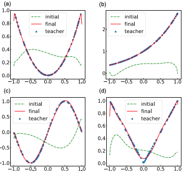
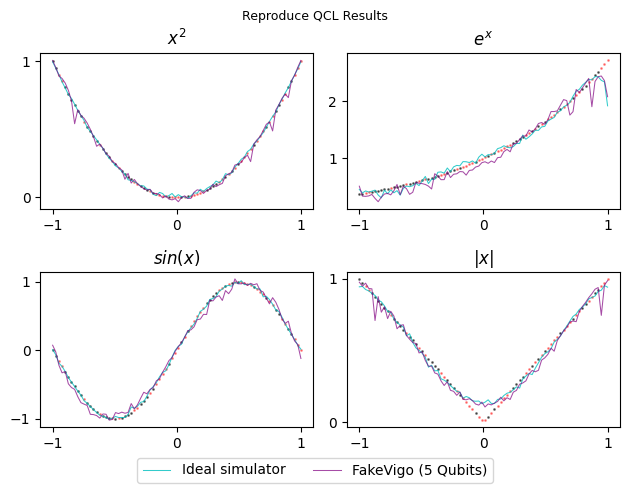
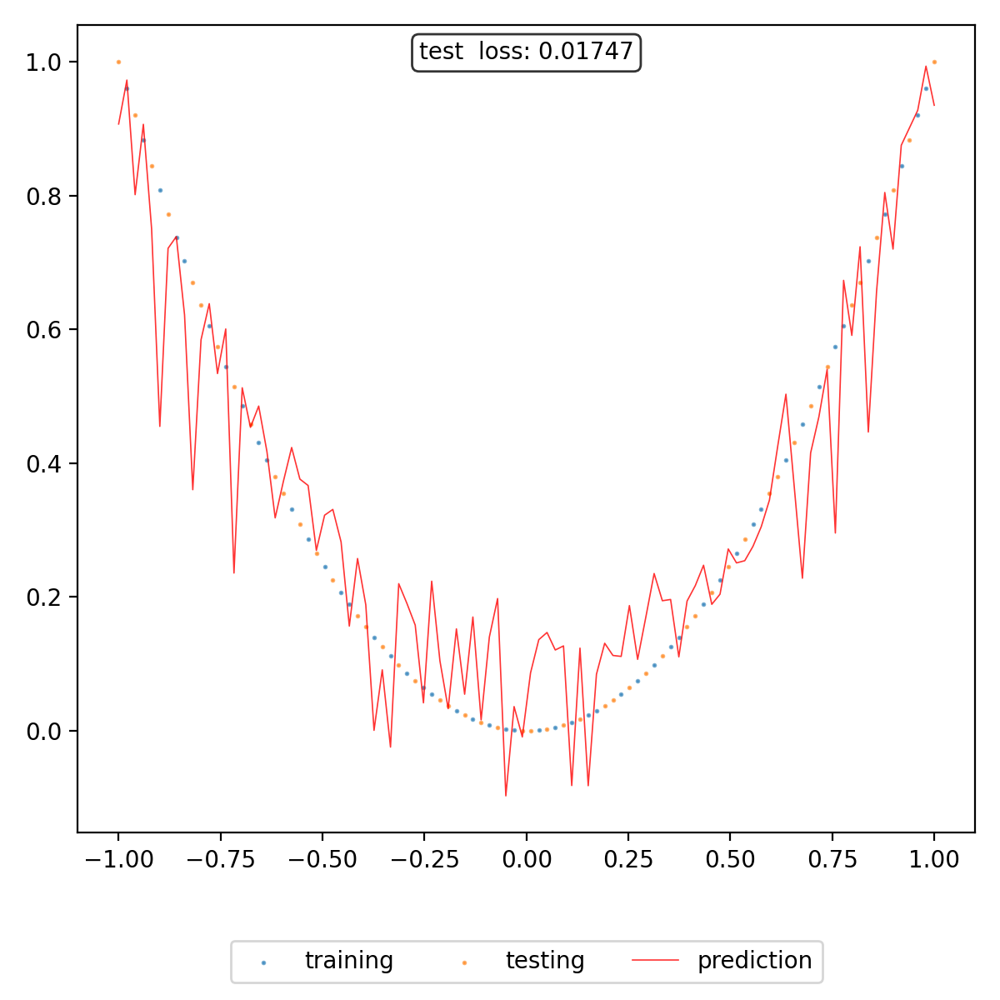
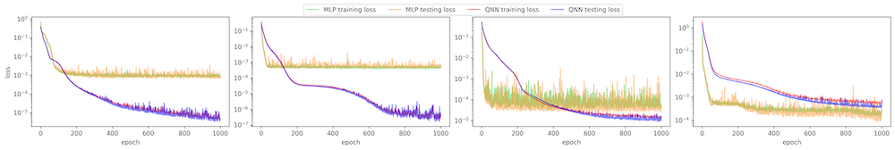
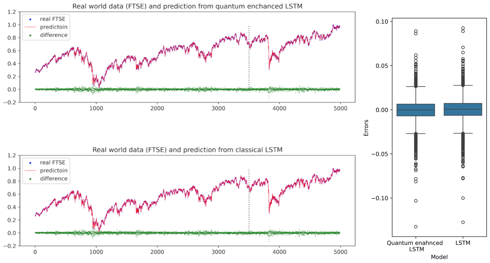

This section focuses on the empirical replication and validation of foundational architectures in Variational Quantum Algorithms (VQAs). A definitive milestone in this domain is the Quantum Circuit Learning (QCL) framework proposed by Kosuke Mitarai et al. This work established the theoretical groundwork for employing Parameterized Quantum Circuits (PQCs) as universal function approximators—the quantum analogue to classical feedforward neural networks—leveraging the parameter-shift rule for exact, analytical gradient evaluation. The replicated benchmarks across various execution backends are illustrated below.



To establish a rigorous baseline, a classical Multilayer Perceptron (MLP) with a 1–5–5–1 architecture was trained under identical optimization targets. The comparative tracking of training and testing loss trajectories underscores the convergence characteristics and expressivity differences between the classical and quantum paradigms.

While several parameterized Ansätze have been proposed for temporal data modeling, practical evaluations on highly stochastic, non-linear real-world datasets remain sparse. To bridge this gap, this initiative implements the Quantum Long Short-Term Memory (QLSTM) framework and subjects it to empirical stress-testing using the Financial Times Stock Exchange (FTSE) index, cross-benchmarking its predictive accuracy and training stability directly against a classical LSTM baseline.

Further experimental configurations and scaling analyses will follow.
Created by Cong in 2025. All rights reserved.